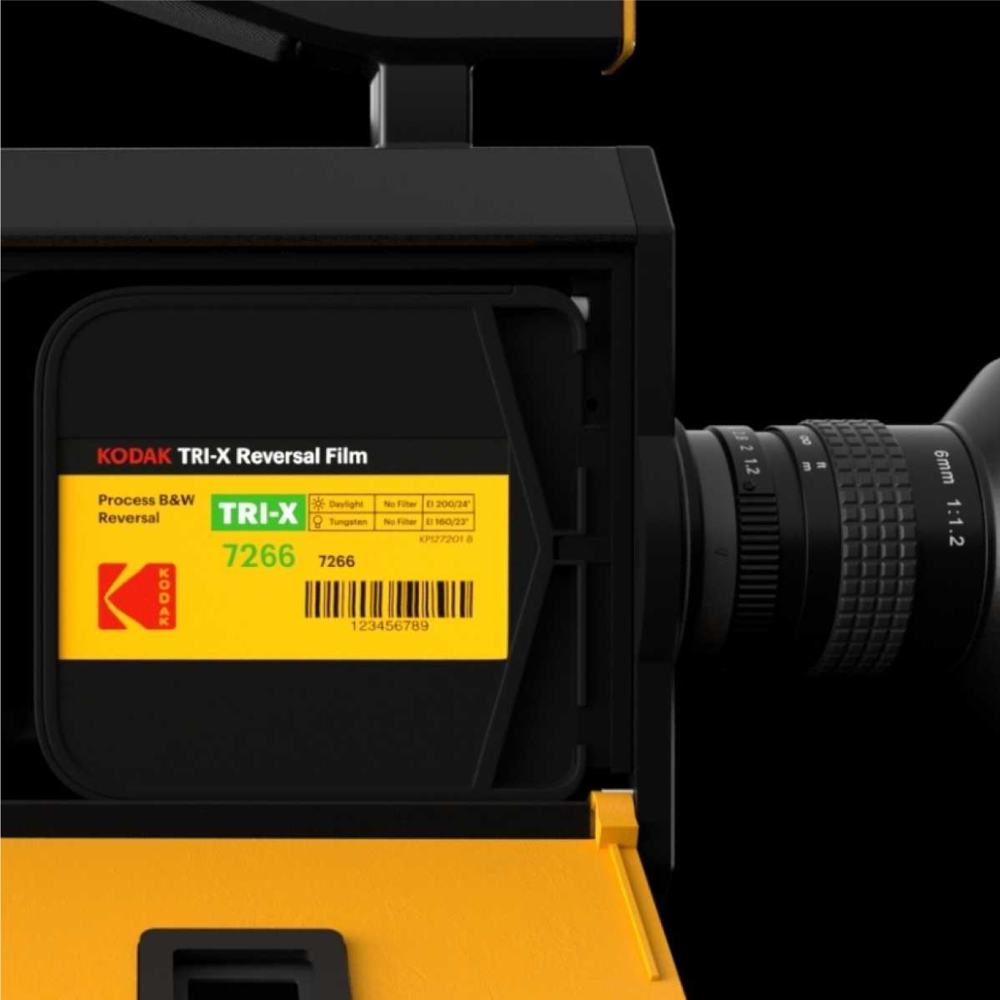

Analog magic, meet modern convenience.
New Kodak
Super 8
We’ve reimagined the KODAK Super 8 Camera for filmmakers looking to stand out. Putting the beauty of film back into filmmaking, the new Super 8 Camera lets you embrace the analog aesthetic, while harnessing today’s technology. Shooting, editing and sharing made simple.
Celebrated by filmmakers.
Interchangeable C-Mount
Lens
The new Super 8 Camera comes equipped with a wide-angle 6mm 1:1.2 C-mount lens. Use any other C-mount prime lens or use adapters to mount other lenses in your kit. Experiment with vintage lenses for a retro feel.
A complete cinematographer’s tool in your hands. Ready for your vision.
Today’s latest film technology.

Each Super 8 cartridge is loaded with 50 feet of Kodak’s professional film - choose from 3 different KODAK VISION3 Color Negative Film stocks, or reversal stocks like TRI-X Black & White Reversal Film or the newly released EKTACHROME Color Reversal Film.
The possibilities are endless, and Kodak has the film to suit any lighting.
Extended Gate
Extended Super 8 Gate (widescreen exposure area)
Versatile Handling
Sleek top handle design with an integrated run button to start shooting.
LCD Screen with Video Output
4” LCD Screen. Optical path, through the lens (TTL) digital viewfinder.
Audio Input with SD Card Storage
3.5 mm mic input / 3.5 mm line input. .Wav format